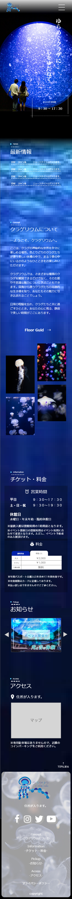

k
u
r
a
g
e
r
i
u
m
u

制作期間
企画/3日 デザイン/10日 コーディング/10日
使用ツール
Vscode,Photoshop,illustlator
使用言語
HTML,CSS,jQuery,JavaScript
ターゲット
癒しを求める成人男女。
Webサイト制作目的
非日常感や癒しを感じられる館内の雰囲気を伝え、来館へと繋げる。
デザイン
- 成人男女がターゲット層であるため、トップページとフロアガイドは落ち着いた雰囲気のデザインを意識。
- ShopとRestaurantはグッズやメニューのイメージも意識し、少しpopなデザインに。
- footerは全体のページに合う色合いやデザインを意識して制作。
フロントエンドを担当し工夫した点
主にトップページとフロアガイドのコーディングを担当しました。
- マウスの動きに応じて水面の波紋が広がる様子をjQuery Ripplesにて実装。
- 平日、土日祝日、休館日によってトップページの営業時間の画像が変わるようにJavaScriptでHolidays JP(API)を使用して実装。
- jQuery inviewを使用してそれぞれのセクションをふわっと表示させたり、じんわり表示させています。
デザインカンプ
